風格沿用 theplaybillv2。地點照片來自 Wikimedia Commons（CC）與 Clarence 提供的照片，來源見 refs/wedding/ATTRIBUTION.md。目前參考圖累計花費 $2.00（W0 $0.62、W1 $1.38）。
w06-bopiliao | 雙人背影走路：陶土質感與人物在動態中是否穩定 |
w08a-guesthouse | 新運鏡＋手部互動：小指碰觸到牽手是最容易崩的細節 |
w10a-fountain | 360° 環繞：最難的一致性測試，三視圖的背面派上用場 |
w13b-4444-cert | 登記日服裝＋真實地點＋101：換裝參考與地標能不能守住 |
四支都以該幕參考圖當影片第一格，再附角色三視圖與風格錨點。跑完參考圖加測試約 $3.26，婚禮預算上限 $5。
便服三視圖（約會段落）與登記日服裝（playbill 定案圖，第 13–14 段）。
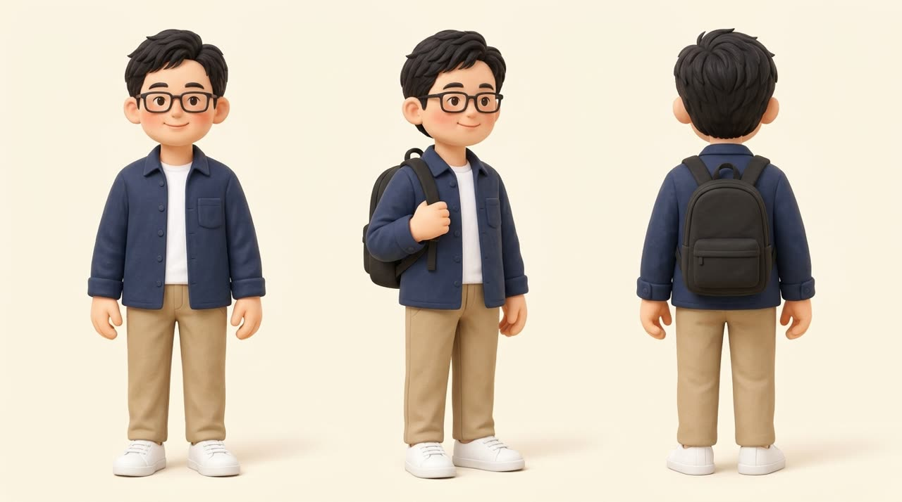
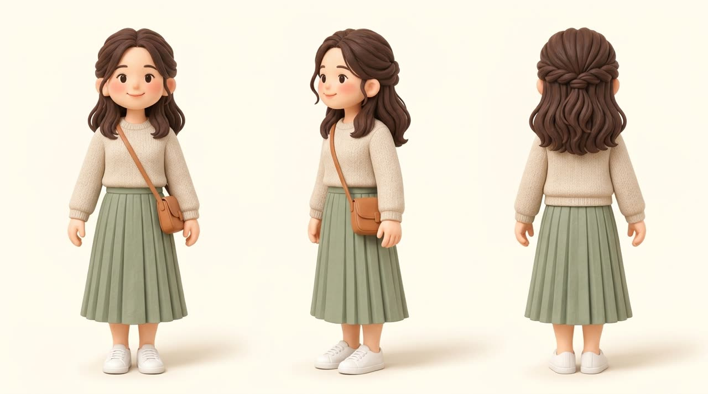
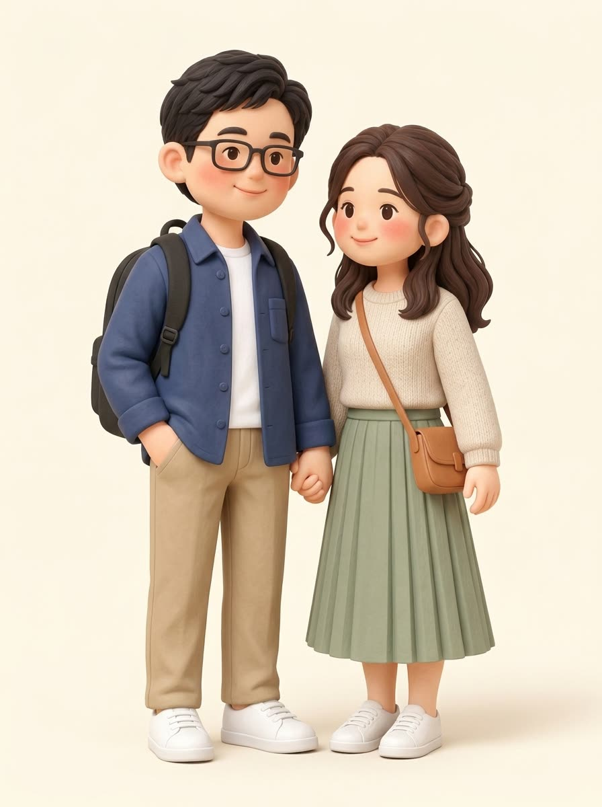
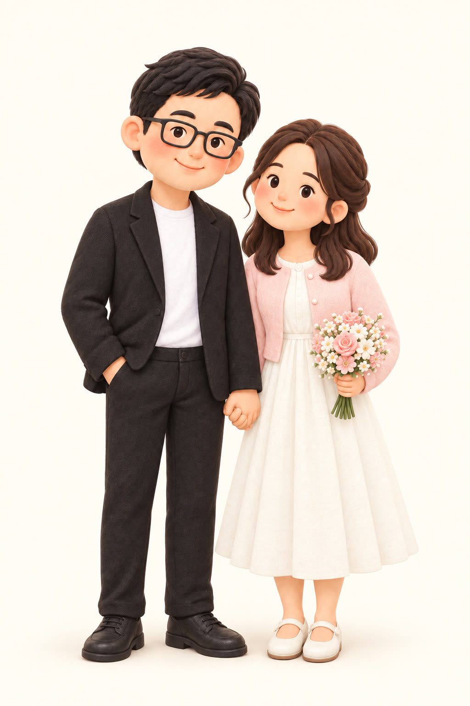
w01-bridge 15s・日出航拍新北大橋，車流緩慢；後段鏡頭下搖到大漢溪水面，橋與朝霞的倒影。🎙 旁白（3–10）：在兩條河的交會，一座橋讓兩顆心每天相遇。
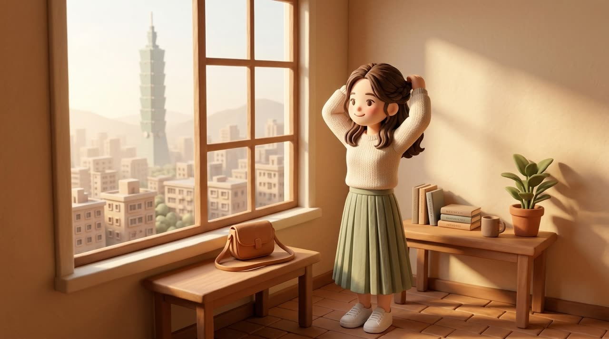
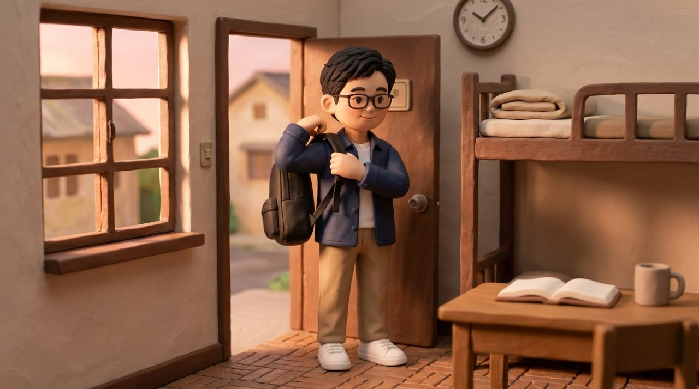
w02a-she-ready 10s・永和小公寓清晨，她綁頭髮、檢查包包、從架上拿鑰匙；廚房傳來鍋鏟聲。w02b-he-leave 10s・三重宿舍清晨，他把黑色背包甩上肩、拉上拉鍊，開門走進走廊。w02c-she-101 8s・她走到窗邊，遠方晨霧中的台北 101；鏡頭從肩後推到側臉，她微微一笑。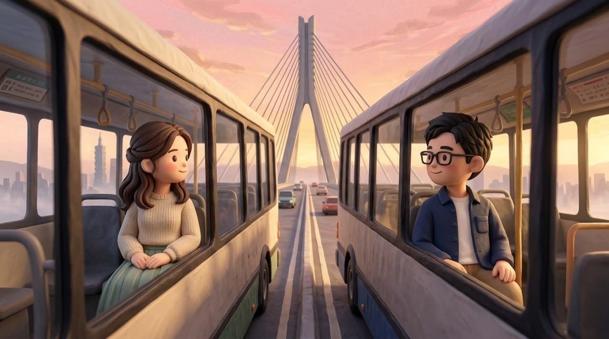
w03-buses 15s・公車上橋→她在車窗邊→兩車在橋上交會、隔著兩層車窗四目相接→連跳河濱、自行車道、遠方另一座橋，停在 101。w03-freeze 5s・定格在 101，ffmpeg 慢推。🎙 旁白（44–50）：走過大橋，看見 101，就像回到家。
st-phone 15s・她手拿手機的特寫照（螢幕留白），泡泡和貼圖後製貼上去，不用影片。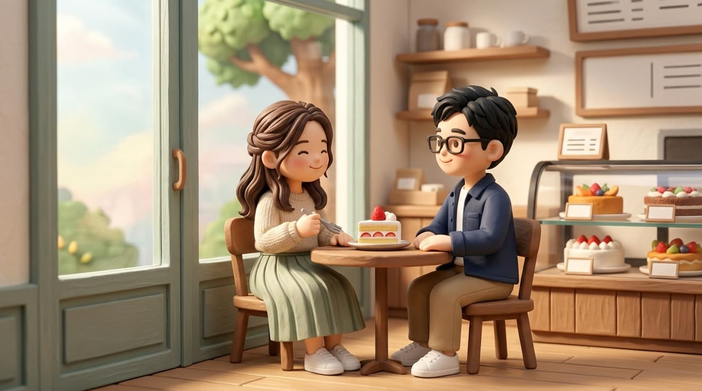
w05a-cake 12s・叉子切草莓鮮奶油蛋糕的微距→平順拉遠，兩人在窗邊小木桌對坐，有點害羞地笑。w05b-cake-high 8s・鏡頭側滑並升到 45° 俯角，兩人邊吃邊笑。🎙 女主（78–84）：甜點，是我們的序章。
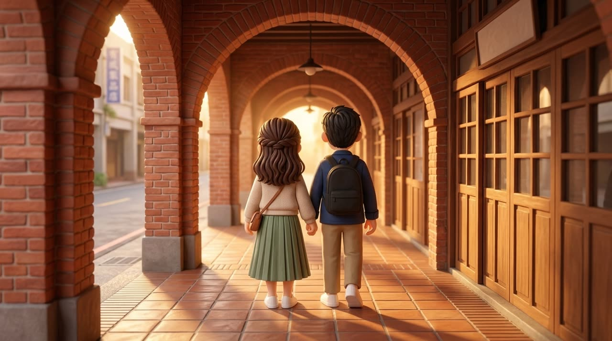
w06-bopiliao 15s・午後紅磚騎樓巷，兩人背對鏡頭並肩慢走、逆光成剪影、邊走邊聊；手持從後跟拍。 360p 測試w06-polaroid 5s・取 w06 一格做成拍立得，字幕寫在相紙下緣。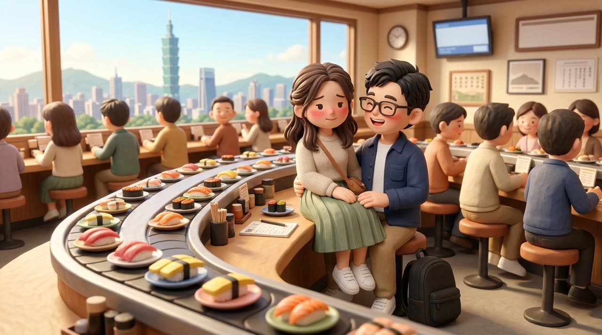
w07a-sushi 10s・午餐尖峰，吧檯只剩一張椅子，他坐下拍拍大腿，她猶豫一下坐上去，又窘又笑；壽司盤從面前滑過。w07b-blush 10s・慢動作臉部特寫，她臉紅低頭再抬眼害羞一笑。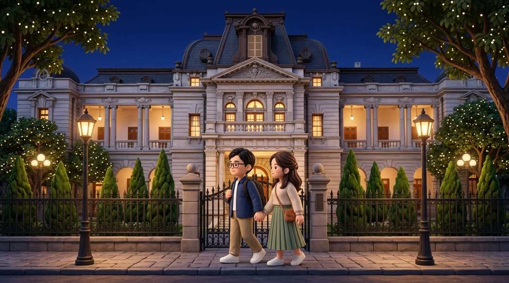
w08a-guesthouse 12s・沿台北賓館鐵欄外的人行道並肩走（側面跟拍）→ 手部特寫：他的小指碰到她的，猶豫一下，牽起來。 360p 測試w08b-guesthouse-rise 8s・從牽著的手開始，鏡頭慢慢升起後退，兩人變小，停在台北賓館亮燈的馬薩式屋頂與星空。🎙 男主（138–145）：原來手心的溫度，是這樣的剛好。
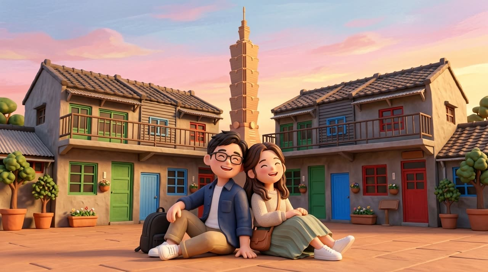
w09a-theatre 6s・全黑→舞台燈啪地亮起；從後方看兩人坐在觀眾席的剪影。w09b-4444-wide 12s・黃昏四四南村草地，背後就是 101；兩人背靠背坐著大笑，鏡頭繞弧。w09c-4444-close 12s・三個近景：她笑、他笑、兩人肩膀相靠。w10a-fountain 15s・噴水池燈光前，他認真看著她（不開口，告白由旁白式口白承接），手持繞兩人一整圈；她掩嘴笑、點頭。 360p 測試w10b-fireworks 10s・她含淚笑著點頭、兩人擁抱，天空煙火炸開照亮臉，最後一道閃光把畫面刷白。🎙 男主（183–196）：如果把妳和我，連成一條線，我想再靠近一點，跨過這條線。如果把兩隻手，牽成一個圓，妳願不願意，讓我再勇敢一點——牽起這段緣？
🎙 女主（197–199）：
w11a-bike 12s・鏡頭穿過前景的高草，出來後跟著他們：他騎車、她側坐後座扶著他的腰，頭髮被風吹起；對岸遠處 101。w11b-bike-away 8s・輪子高度側跟，接著兩人騎遠、朝向天際線。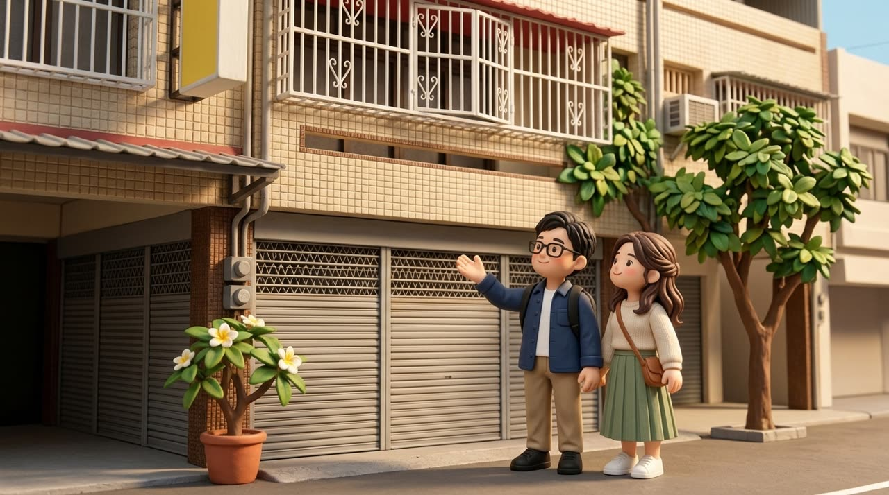
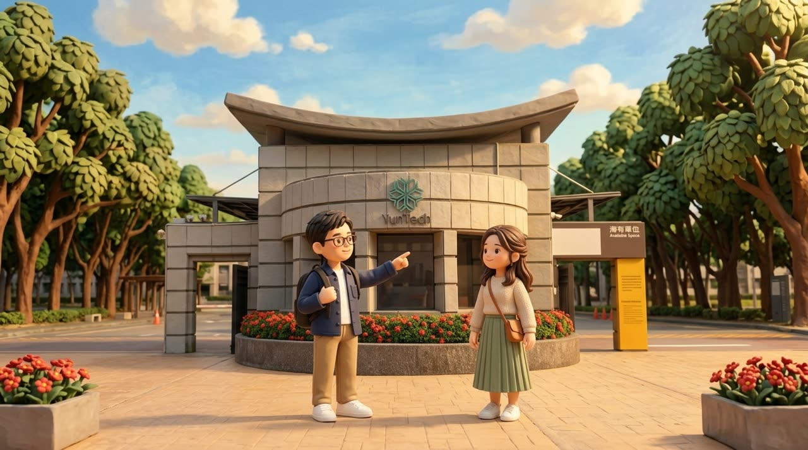
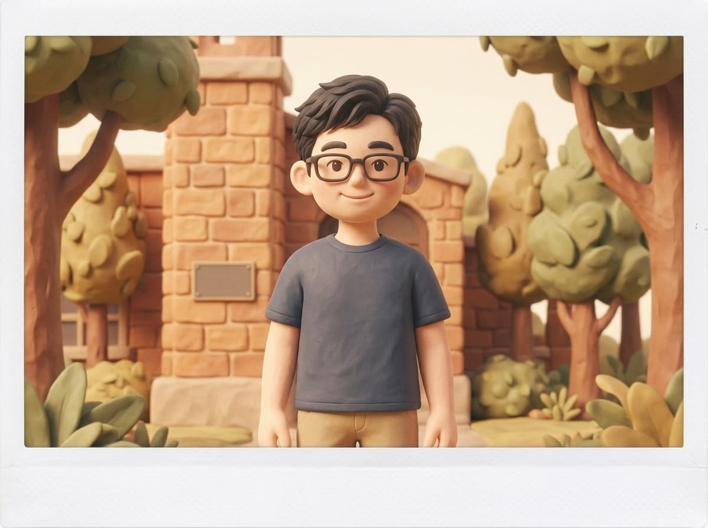
w12a-home 14s・雲林透天老家門口，他得意地比著房子介紹，她抬頭看、好奇又開心；空拍慢慢往後上升，露出整條街。w12b-yuntech 10s・雲科大校門前，他指著校門講當年的事，她笑出來。st-oldphoto 6s・他大學時期穿系服的老照片。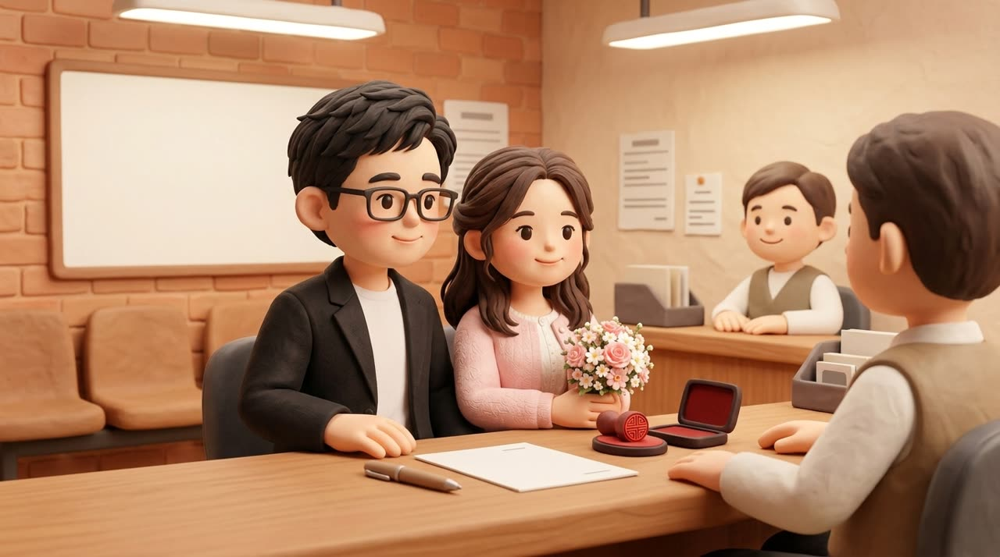
w13a-registry 10s・筆簽名（字跡看不清）→紅印章蓋下抬起→櫃檯遞出證書，兩人的手接過。w13b-4444-cert 10s・回到四四南村，藍天白雲，彩色門窗老屋前、背後 101，兩人一起把證書舉高、笑得燦爛。 360p 測試🎙 女主（257–263）：紙張薄薄，愛卻滿溢。
w14a-levee 10s・永和河堤日落，從背後看兩人牽手往夕陽走。w14b-paddy 10s・雲林稻田清晨，從背後看兩人牽手走在田埂上，薄霧。